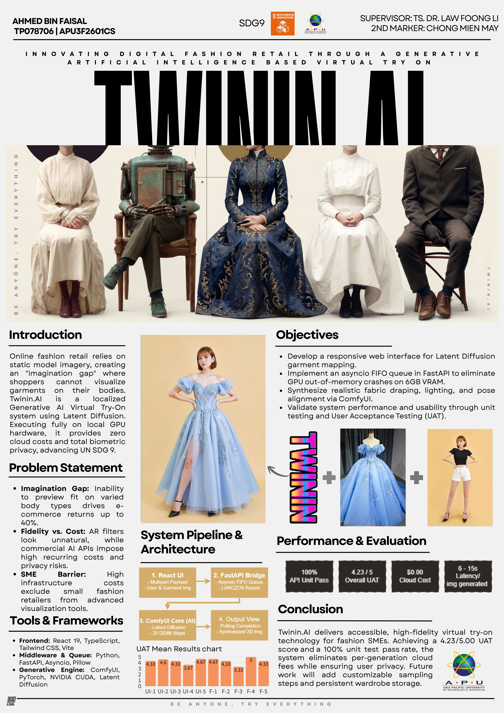
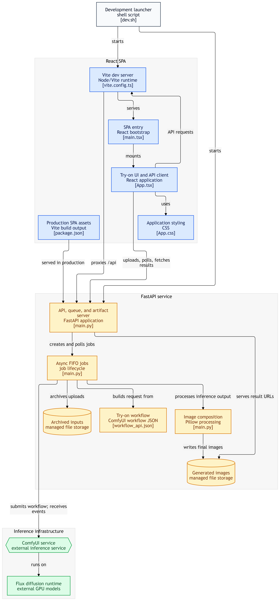
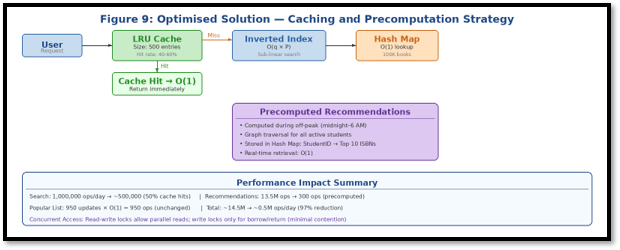
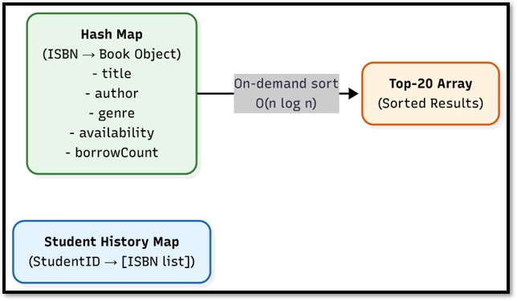
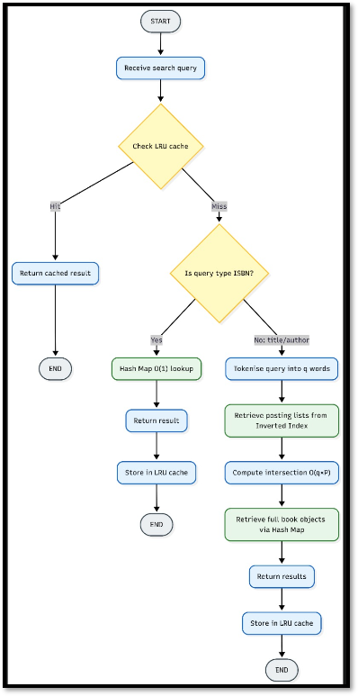
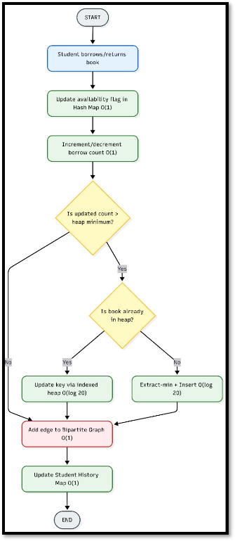

Twinin.AI - Virtual Try-On
Generative AIComfyUIFastAPIReactWebSockets
Engineered a localized Virtual Try-On (VTON) web application leveraging Generative AI to simulate fabric draping and lighting.


- Architected a decoupled 3-tier system using React, FastAPI, and a headless ComfyUI backend to execute AI models locally for data privacy.
- Designed and implemented an asynchronous FIFO queue system to serialize heavy GPU rendering tasks, preventing OOM crashes on constrained VRAM.
- Integrated advanced diffusion control nodes (ControlNet for spatial/pose conditioning and IP-Adapter for visual semantic transfer).
- Developed real-time frontend polling mechanisms via HTTP/WebSockets to maintain seamless UI state synchronization.
- Applied Agile (Scrum) methodologies and conducted mixed-method user research to drive software requirements and UX design.
Real-Time Data Pipeline
RustTokioSSEIPCMultithreading
Engineered a high-velocity, real-time data ingestion pipeline in Rust capable of processing live Server-Sent Events (SSE).
- Implemented zero-copy memory management and stack allocation strategies to eliminate non-deterministic garbage collection pauses.
- Designed priority-aware IPC using bounded MPSC channels to manage network backpressure, dynamically prioritizing critical traffic.
- Architected dynamic fail-safe mechanisms and asynchronous watchdog timers to trigger degraded operational modes during deadline violations.
- Benchmarked and evaluated the latency trade-offs between OS-level synchronous multithreading and Tokio asynchronous runtimes.
Distributed HRM System
Java RMITCP/IPSSL/TLSMySQL
Architected a secure, distributed Human Resource Management system utilizing a client-server model powered by Java RMI.
- Secured network communications by implementing SSL/TLS encryption protocols over TCP for safe data transmission.
- Applied object-oriented principles and implemented multithreading to handle concurrent client requests and power a background polling dashboard.
- Utilized object serialization to map and transfer complex data objects across network boundaries.
- Conducted comparative research on enterprise middleware technologies (CORBA, COM, WCF, MOM) to justify architectural design choices.
Cloud Microservices Architecture
AWS LambdaAPI GatewayS3SNSX-Ray
Refactored a legacy monolithic web application into a decoupled, serverless microservices architecture.
- Resolved critical I/O bottlenecks and thread pool exhaustion by migrating to a decoupled serverless environment.
- Engineered event-driven data flows using AWS API Gateway, Lambda, and SNS for automated backend processing and notifications.
- Implemented direct-to-S3 uploads utilizing cryptographic presigned URLs, offloading heavy data streaming from the primary compute server.
- Integrated AWS X-Ray and CloudWatch Application Signals to profile system telemetry, trace distributed requests, and optimize latency.
Algorithmic Recommendation Engine
Data StructuresBig-OOptimization
Designed a highly scalable, real-time book recommendation and retrieval architecture capable of handling high-frequency operations.




- Optimized system performance from linear to sub-linear time complexities by deploying hybrid data structures (Inverted Indexes, Min-Heaps).
- Applied computational complexity theory to classify operations as P or NP-hard.
- Developed heuristic collaborative-filtering algorithms and off-peak caching strategies to bypass NP-hard combinatorial bottlenecks.
License Plate Recognition
PythonOpenCVEasyOCRCustomTkinter
Developed an end-to-end vehicle License Plate Recognition (LPR) and State Identification System utilizing classical computer vision.
- Engineered an image processing pipeline for region localization utilizing CLAHE contrast enhancement, morphological operations, and contours.
- Processed localized crops using EasyOCR through a multi-variant strategy (adaptive thresholding, inversion) to extract alphanumeric data.
- Designed a deterministic prefix lookup algorithm with longest-first extraction to classify state jurisdictions and handle multi-line ambiguity.
- Built a concurrent desktop GUI utilizing CustomTkinter with daemon threading to prevent UI blocking during heavy matrix operations.
UX Research & Prototyping
FigmaWireframingUsability TestingHTA
Led the end-to-end UX design for an interactive mobile navigation application, progressing from wireframes to hi-fi prototypes.
- Authored an academic analysis on mobile UI challenges, focusing on spatial constraints, Fitts’ Law target accuracy, and WCAG compliance.
- Conducted comprehensive user research using Hierarchical Task Analysis (HTA), persona development, and Mendelow’s matrix.
- Executed formative UX evaluations applying the DECIDE framework, including heuristic expert reviews and usability testing.